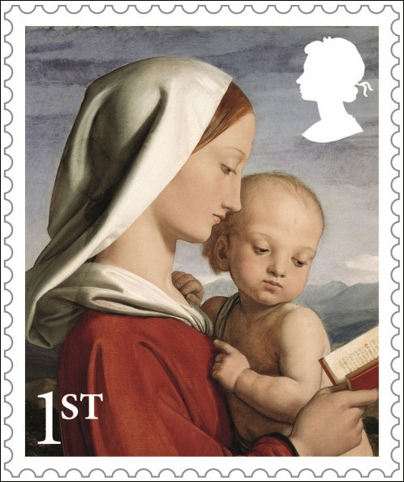
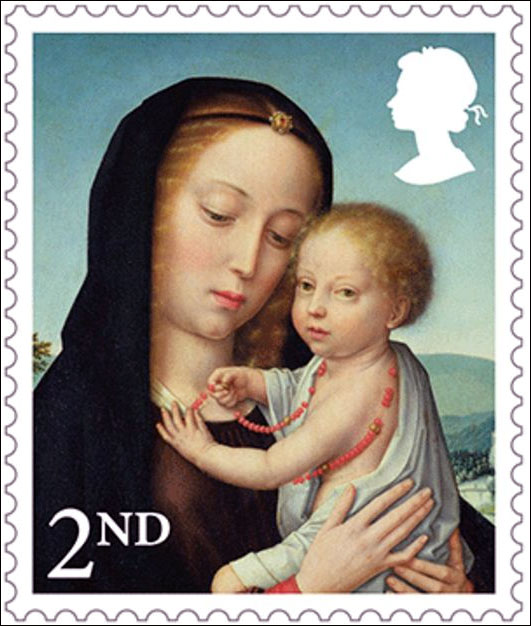
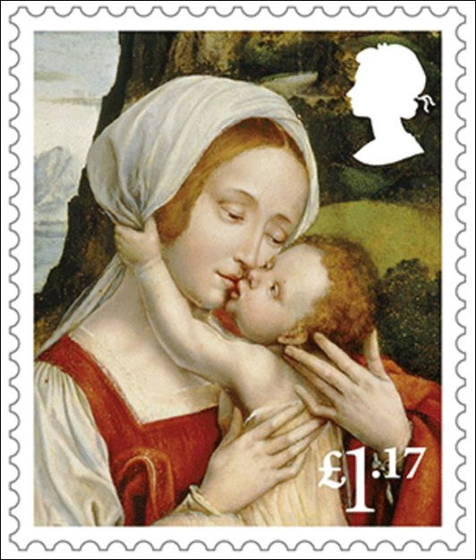
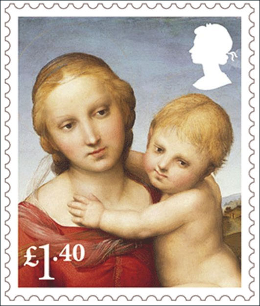
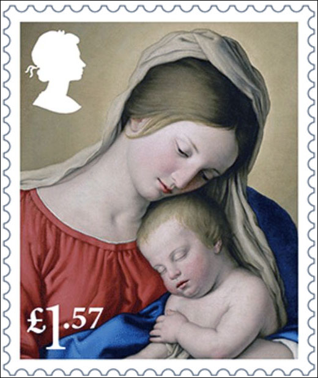
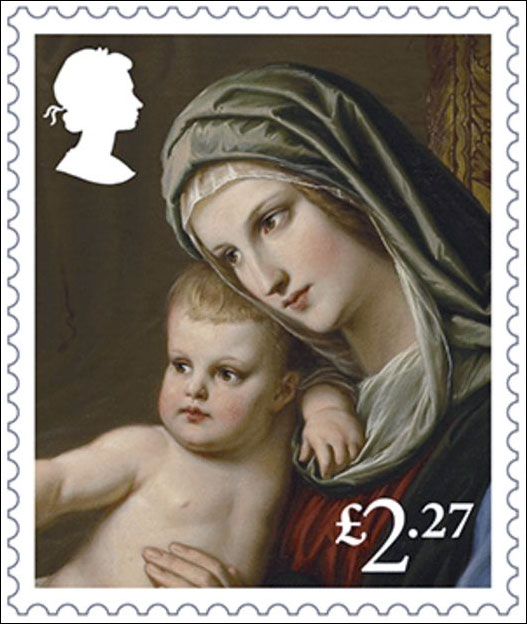
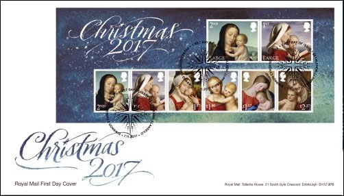
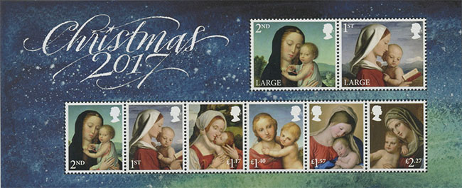
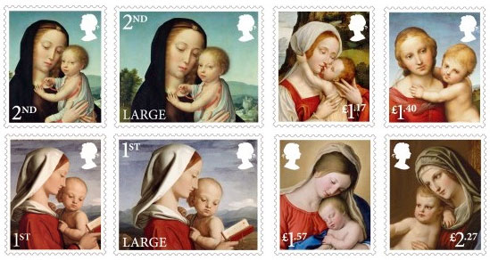

The Royal Mail has recently unveiled its special stamps for this year's festive season! Six of them feature Madonna and child, focusing on a very human aspect of human life, the motherhood. The name Madonna is Italian for 'my lady' to show how important she is for life.
The first-class stamps depict a detail from painting The Madonna and Child, by 19th-century Scottish artist William Dyce, that is part of the Royal Collection. According to the Royal Trust, which looks after the Royal Collection, this oil-on-canvas hangs in the queen’s bedroom at Osborne House. It was purchased by Prince Albert in 1845.
The website of the Royal Collection describes the painting as follows: “While the pose here is tender, the focus is more on religious devotion than maternal affection, the spiritual rather than the sensual. The Virgin reads a Bible passage referring to the stock of Jesse (Isaiah 11) and the child points to Mary as the origin of Christ.”

The two second-class Madonna and Child stamps show a detail from The Virgin and Child. This oil-on-canvas work is believed to have been painted around 1520 and is attributed to Gerard David. Now part of the Prado Museum in Madrid, Spain, this painting was once part of the collection of King Phillip II (1527-98), who sent it to Royal Site of San Lorenzo de El Escorial in 1577.

The £1.17 stamp features a detail of a painting that is part of the collection at El Escorial, Virgin Mary with Child attributed to 15th-century Flemish artist Quinten Massys.

The £1.40 stamp depicts the detail of The Small Cowper Madonna, so named because it was sold around 1780 to George Nassau Clavering-Cowper, the third Earl Cowper and stayed in the family until the early 20th century. The painting dates from Raphael’s years in Florence (1504-08). Today it belongs to the National Gallery of Art, in Washington, DC.

Reproduced on the £1.57 stamp is a detail of The Sleep of the Infant Jesus by 17th-century Italian painter Giovanni Battista Sassoferrato. The painting was acquired by the Louvre in 1816.

The high denomination of the set, £2.27, depicts a detail from St. Luke Painting the Virgin by Austrian artist Eduard Jakob von Steinle. Part of the Royal Collection, it was painted in 1851 for Prince Albert, who gave it to his wife, Queen Victoria, as a birthday gift that year.

A nice First Day Cover complements the Madonnas set:

Below we depict the commemorative sheet of the issue.

Finally, after about forty years, a serious postal administration offers a multi stamps, nice Madonnas set and sheet!

Source, with thanks for the wonderful reproductions and descriptions: Royal Mail stamps 2017.